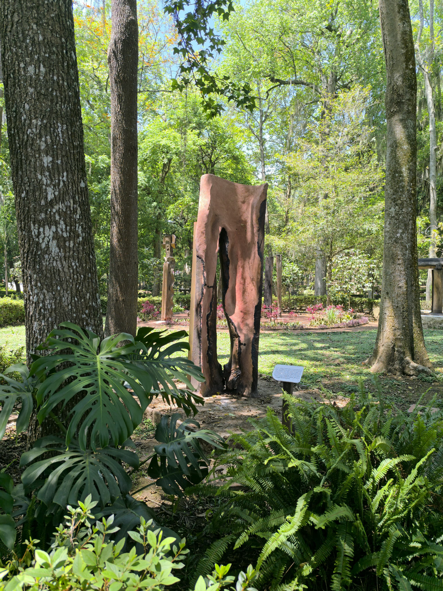
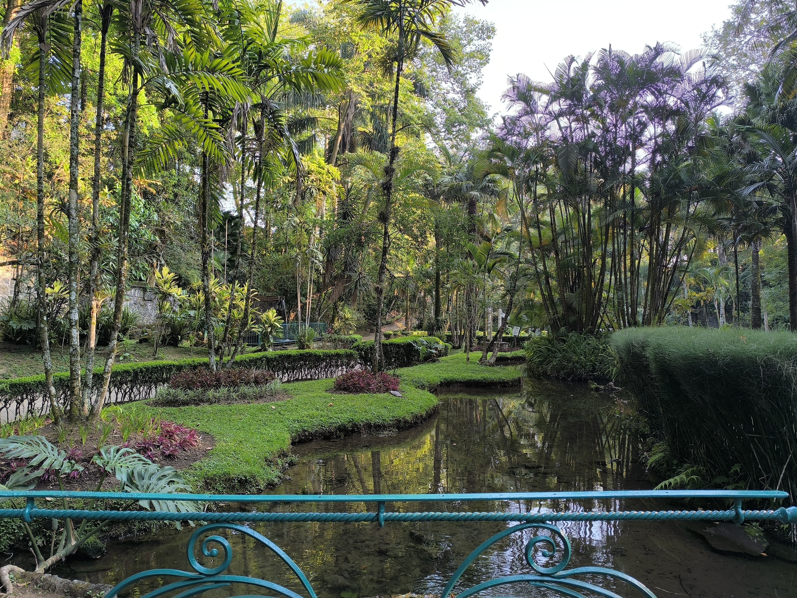
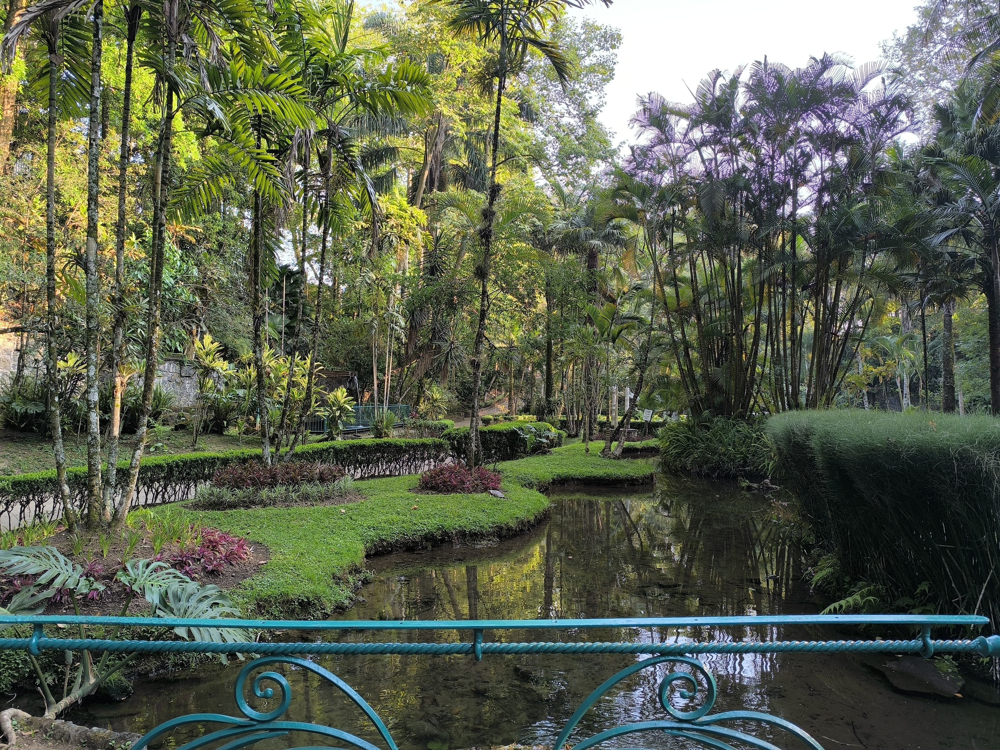

Parque Berros
Los Berros
Visitamos el parque un viernes por la mañana y encontramos un ambiente bastante tranquilo, con poca gente. Algunas personas caminaban, mientras que otras realizaban actividades recreativas como yoga. Nos comentaron que los fines de semana suelen ser más concurridos, con visitantes que practican running, ciclismo, patinaje e incluso boxeo al aire libre.
En los alrededores del parque hay una gran variedad de puestos de comida. Lo que más nos llamó la atención fueron unos churros rellenos que se veían deliciosos; lamentablemente, ya habíamos desayunado y no pudimos probarlos.
El parque cuenta con tres estaciones de juegos infantiles, una zona de ejercicios y un kiosco central. Destaca por ser el parque más antiguo de Xalapa, fundado en 1886 bajo el nombre "Miguel Hidalgo" y, con el tiempo, conocido como Los Berros. Alberga 43 especies de árboles, 22 nativas de México y 21 procedentes de otras partes del mundo.
Entre los árboles más importantes del parque se encuentran el liquidámbar, fresno, encino, haya, grevillea, tulipán africano, eucalipto, trueno y araucaria. También destacan el jicarillo, un árbol de 17 metros de altura y aproximadamente 140 años de edad, y el lengua de pájaro, que mide 13 metros y tiene un diámetro de 79 cm. Otros ejemplares notables son los tres liquidámbares centenarios, de 16 metros de altura, y los diez árboles de haya, que alcanzan entre 22 y 26 metros de altura.
Visita el parque "Los Berros" en Xalapa
Parque Haya


El Haya
El parque natural y reserva Las Hayas es un lugar donde, además de albergar una gran diversidad de flora y fauna, se encuentra un complejo universitario de la UV con programas de conservación y reforestación. Forma parte del “Cinturón Verde de Xalapa” y colinda con el Área Natural Protegida conocida como el “Santuario Bosque de Niebla Francisco Javier Clavijero”, lo que resalta los esfuerzos de conservación en la zona.
Este lugar cuenta con un tesoro poco conocido: se han registrado en él 253 géneros y 461 especies de hongos. No es un sitio muy concurrido debido a su ubicación, pero vale totalmente la pena visitarlo. En la entrada hay zonas deportivas y canchas, además de una estación de descanso con asadores y comederos dentro del parque. La entrada es completamente gratuita.
Su ecosistema es un bosque de niebla con una gran biodiversidad de plantas y animales autóctonos. Los senderos son amplios y extensos, ideales para recorrer sin inconvenientes. Su historia es interesante: inicialmente, fue un gran arenal aprovechado por un extranjero de nacionalidad china, quien utilizó el manantial que emergía del sitio para cultivar y cosechar. Posteriormente, fue un zoológico que funcionó por algunos años, hasta convertirse en lo que es hoy: un gran parque y pulmón verde en el centro de Xalapa.
Ven a visitar el parque haya!

Parque Tecajetes
 



Los Tecajetes
Este parque es uno de los más reconocidos y favoritos de los xalapeños, además de ser altamente recomendado para turistas. Ubicado casi en el centro de la ciudad, es un hermoso oasis urbano.
En él se encuentra un gran nacimiento de agua natural, que se distribuye a través de estanques de piedra acondicionados para la vida silvestre. La combinación de estos estanques artificiales con la abundante vegetación genera una gran sensación de paz y tranquilidad para quienes lo visitan. En sus aguas habitan peces koi de gran tamaño y numerosas tortugas. Además, el parque recibe aves migratorias que descansan en este refugio natural.
Cuenta con zonas deportivas, como canchas, y áreas de recreación para niños. Los fines de semana son los días más concurridos, ya que se organizan diversas actividades recreativas. En el pasado, el parque tenía un reptiliario y ofrecía demostraciones de aves. Se dice que actualmente se trabaja en recuperar estos proyectos.